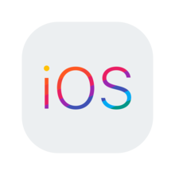

Εισαγωγή στην ανάπτυξη εφαρμογών για IOS
Διάρκεια= 8 εβδομάδες | Κόστος = 150$

Το iOS (προηγουμένως iPhone OS) είναι ένα λογισμικό για κινητά το οποίο αναπτύχθηκε και διανέμεται από την Apple Inc. Αρχικά παρουσιάστηκε το 2007 για το iPhone,
ενώ υποστηρίζει και άλλες συσκευές της Apple όπως το iPod touch (Σεπτέμβριος 2007), το iPad (Ιανουάριος 2010) και το Apple TV (δεύτερης γενιάς) (Σεπτέμβριος 2010).
Αντίθετα από το Windows Phone της Microsoft και το Android της Google, η Apple δεν δίνει την άδεια για την εγκατάσταση του λογισμικού iOS σε συσκευές που δεν είναι κατασκευής
Apple. Στις Ιανουαρίου 2013, το App Store της Apple περιείχε περισσότερο από 775.000 εφαρμογές iOS, 300.000 από τις οποίες ήταν συμβατές για iPad. Αυτές οι εφαρμογές έχουν
μεταφορτωθεί συνολικά περισσότερα από 50 δισεκατομμύρια φορές.Σε αυτό το μάθημα θα μάθετε τα εργαλεία, τις τεχνικές και τις έννοιες που απαιτούνται για την κατασκευή μιας
βασικής εφαρμογής iOS, από την αρχή. Θα εξοικειωθείτε με τη γλώσσα προγραμματισμού Swift και θα μάθετε πώς να χρησιμοποιείτε τα εργαλεία προγραμματιστών της Apple για να
δημιουργήσετε μια εφαρμογή.
Τι θα μάθεις στο συγκεκριμένο μάθημα.
-
Κατανόηση και χρήση της γλώσσας προγραμματισμού Swift.
-
Χρησιμοποιήστε και εξηγήστε τα εργαλεία προγραμματιστών της Apple: συμπεριλαμβανομένων Xcode, Interface Builder, Documentation Browser
-
Συνομιλήστε με σιγουριά με προγραμματιστές iOS, κατανοώντας τα βασικά στοιχεία της κωδικοποίησης και της ανάπτυξης εφαρμογών
-
Σχεδιάστε, αναπτύξτε και δημιουργήστε τις δικές σας απλές εφαρμογές iOS.
Link για τα μαθήματα!
Εισαγωγή στην εμπείρια χρήστη(User Experience)
Διάρκεια= 4 εβδομάδες | Κόστος = ΔΩΡΕΑΝ

Το UX (γνωστό και ως User Experience) είναι ουσιαστικά ο τελικός σκοπός ενός site ή ενός e-shop. Είναι η συνολική εμπειρία του χρήστη όταν επισκέπτεται ένα site ή e-shop .
Μια εμπειρία, η οποία είναι πολυσύνθετη και εξαρτάται από πληθώρα παραγόντων, κυριότερος εκ των οποίων είναι σαφώς η Χρηστικότητα (Usability).Ένας επαγγελματίας UX είναι
σε θέση να παρέμβει στη διαδικασία σχεδιασμού ενός ψηφιακού προϊόντος ή υπηρεσίας προκειμένου να διασφαλίσει μια προσέγγιση με επίκεντρο τον χρήστη.Οι οργανισμοί εκτιμούν τις
καινοτόμες και καλά σχεδιασμένες εμπειρίες χρήστη για τους πελάτες και τους υπαλλήλους τους, είτε χρησιμοποιούν τους ιστότοπούς τους, τις εφαρμογές για κινητά, τα
περίπτερα αυτοεξυπηρέτησης στο κατάστημα ή διάφορες εσωτερικές διεπαφές. Η πρακτική της σχεδίασης UX χρησιμοποιεί την προσέγγιση με επίκεντρο τον χρήστη και καλύπτει
3 κύριες δραστηριότητες: Έρευνα UX (γνώριση των χρηστών και των πλαισίων τους), δραστηριότητες που περιβάλλουν τον ιδεασμό (όπως "σχεδιαστική σκέψη" και συμμετοχικός
σχεδιασμός) και δημιουργία πρωτοτύπων. Αυτό το μάθημα διδάσκει μεθόδους, τεχνικές και ψηφιακά εργαλεία ειδικά για το UX στο σημερινό επιχειρηματικό πλαίσιο.
Τι θα μάθεις στο συγκεκριμένο μάθημα.
-
UX project cycle
-
UX stakeholders
-
User, Client and Citizen Experiences
-
UX ROI and KPIs
Link για τα μαθήματα!
Εισαγωγή στην ανάπτυξη βιντεοπαιχνιδιών με το Unity
Διάρκεια= 6 εβδομάδες | Κόστος = ΔΩΡΕΑΝ
Το Unity είναι μια μηχανή παιχνιδιών πολλαπλών πλατφορμών που αναπτύχθηκε από την Unity Technologies, η οποία ανακοινώθηκε και κυκλοφόρησε για πρώτη φορά τον Ιούνιο του
2005 στο Παγκόσμιο Συνέδριο Προγραμματιστών της Apple Inc. ως αποκλειστική μηχανή παιχνιδιών για Mac OS X. Έκτοτε, ο κινητήρας επεκτάθηκε σταδιακά για να υποστηρίζει μια
ποικιλία πλατφορμών για επιτραπέζιους υπολογιστές, κινητά, κονσόλα και εικονική πραγματικότητα. Είναι ιδιαίτερα δημοφιλές για την ανάπτυξη παιχνιδιών για κινητά iOS και
Android και χρησιμοποιείται για παιχνίδια όπως Pokémon Go, Monument Valley, Call of Duty: Mobile, Beat Saber και Cuphead.[3] Θεωρείται εύκολο στη χρήση για αρχάριους
προγραμματιστές και είναι δημοφιλές για την ανάπτυξη indie παιχνιδιών.[4]Το Unity είναι ο πιο δημοφιλής κινητήρας για λόγους όπως τα ισχυρά εργαλεία του, η ικανότητά του
να δημιουργεί παιχνίδια σε περισσότερες από 20 διαφορετικές πλατφόρμες, η εξαιρετική του καμπύλη εκμάθησης και τα εκατοντάδες πρόσθετα που διατίθενται σε αυτό που έχουν
αναπτυχθεί από τρίτους.
Τι θα μάθεις στο συγκεκριμένο μάθημα.
-
Γνωριμία με τη διεπαφή Unity
-
Ποια είναι τα θεμελιώδη στοιχεία της Unity engine
-
Για να αναπτύξετε τα πρώτα σας παιχνίδια
Link για τα μαθήματα!